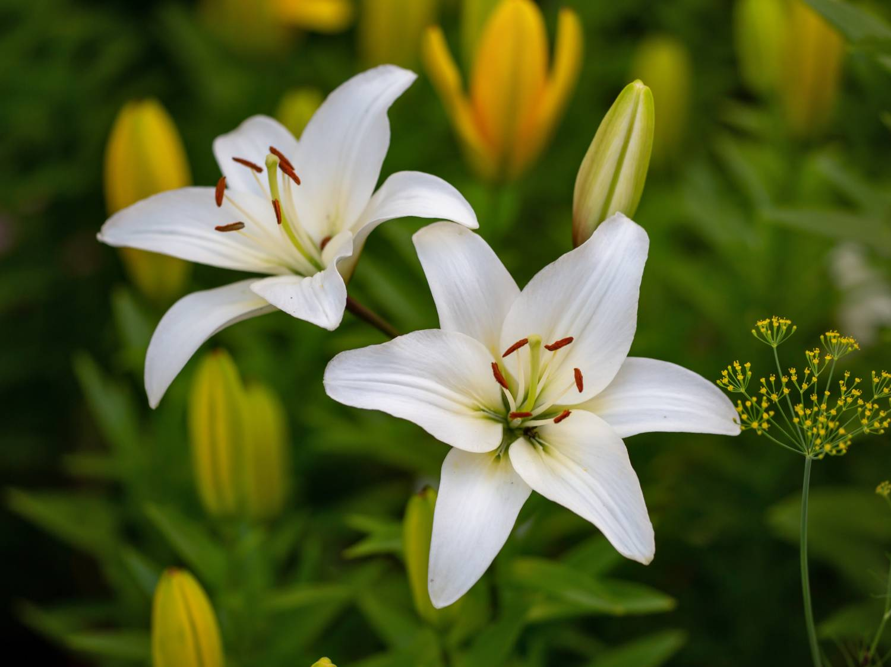

My Favorite Plant

Lilies are perennial plants known for their showy, often fragrant, trumpet-shaped flowers. They typically grow from bulbs and have narrow leaves along a leafy stem. There are over 100 species of "true lilies" (Lilium genus), but the term "lily" is also used more broadly for other plants with similar flowers or foliage.
Back to home